Numerators
By hand we investigated and , which led to considering
- 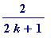 (2 unit fractions)
- 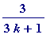 (3 unit fractions)
- 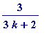 (2 unit fractions)
and one was then interested in numerators: 4, 5, 6, 7, ...
Looking at , with 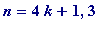 (we notice...)
> seq(howmany(4/(4*k+1)), k=1..45);
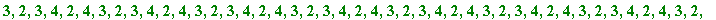

>
Note those k's (up to whatever...) for which 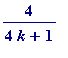 requires 4 unit fractions):
>
L4 := []:
for k to 90 do
if howmany(4/(4*k+1)) = 4
then L4 := [op(L4), k]
fi od; L4;

> seq(howmany(4/(4*k+3)), k=1..45);


>
Looking at , with 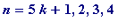 (we notice...)
> seq(howmany(5/(5*k+1)), k=1..45);
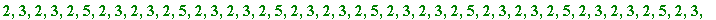

>
L5 := []:
for k to 150 do
if howmany(5/(5*k+1)) = 5
then L5 := [op(L5), k]
fi od; L5;
> seq(howmany(5/(5*k+2)), k=1..45);
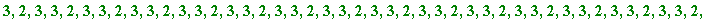
> seq(howmany(5/(5*k+3)), k=1..45);

> seq(howmany(5/(5*k+4)), k=1..45);


>
Looking at , with 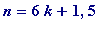 (we notice...)
> seq(howmany(6/(6*k+1)), k=1..45);
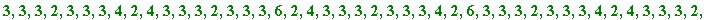

>
L6 := []:
for k to 360 do
if howmany(6/(6*k+1)) = 6
then L6 := [op(L6), k]
fi od; L6;
> seq(howmany(6/(6*k+5)), k=1..45);
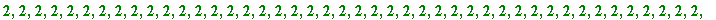
>
Looking at , with 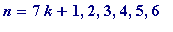 (we notice...)
> seq(howmany(7/(7*k+1)), k=1..45);
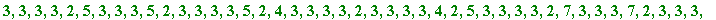
>
L7 := []:
for k to 400 do
if howmany(7/(7*k+1)) = 7
then L7 := [op(L7), k]
fi od; L7;

> seq(howmany(7/(7*k+2)), k=1..45);
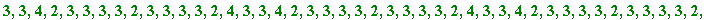
> seq(howmany(7/(7*k+3)), k=1..45);


> seq(howmany(7/(7*k+4)), k=1..45);


> seq(howmany(7/(7*k+5)), k=1..45);

> seq(howmany(7/(7*k+6)), k=1..45);
>
Looking at , with 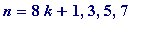 (we notice...)
> seq(howmany(8/(8*k+1)), k=1..45);
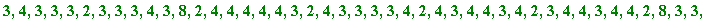

>
L8 := []:
for k to 400 do
if howmany(8/(8*k+1)) = 8
then L8 := [op(L8), k]
fi od; L8;
> seq(howmany(8/(8*k+3)), k=1..45);
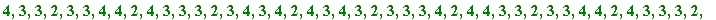

> seq(howmany(8/(8*k+5)), k=1..45);

> seq(howmany(8/(8*k+7)), k=1..45);


>